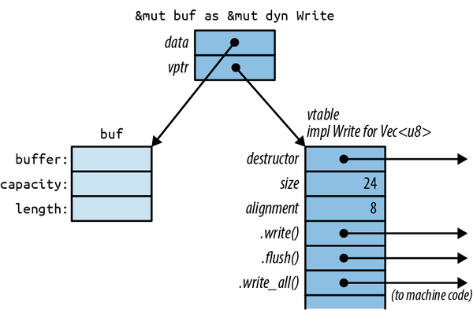

第十一章 特质与泛型
[阿] 计算机科学家通常能够处理非均匀结构的问题——即各种不同的情况。而数学家则更倾向于寻找一个能够统御整个系统的统一公理。
唐纳德·克努特
在编程领域，有一个非常重要的发现：我们可以编写能够处理多种不同类型值的代码，甚至包括那些尚未被发明出来的类型。以下是两个例子：
-
Vec<T>是通用的：你可以创建任何类型值的向量，包括程序中定义的那些类型——这些类型可能是Vec的作者从未预料到的。 -
许多对象都有.write()种方法，包括File和TcpStream等。你的代码可以引用一个写入器，任何类型的写入器都可以被使用，而且你可以向它发送数据。你的代码不需要关心写入器是什么类型的。之后，如果有人增加了新的写入器类型，你的代码自然也能支持它。
当然，这种特性在 Rust 语言中并不新鲜。它被称为多态性，是 20 世纪 70 年代流行的新型编程技术。如今，多态性已经变得普遍应用。Rust 通过两个相关的特性来支持多态性：特质和泛型。这些概念对许多程序员来说应该并不陌生，但 Rust 采用了一种新颖的方法来实现多态性，这种方法的灵感来源于 Haskell 的类型类概念。
“特质”是 Rust 中对接口或抽象基类的一种实现方式。乍看之下，它们与 Java 或 C#中的接口并无区别。用于处理字节数据的特质被称为 std::io::Write ，其在标准库中的定义如下：
traitWrite{fnwrite(&mutself,buf:&[u8])->Result<usize>;fnflush(&mutself)->Result<()>;fnwrite_all(&mutself,buf:&[u8])->Result<()>{...}...}
这一特性提供了多种实现方式；我们仅展示了其中的前三种。
标准类型 File 和 TcpStream 都实现了 std::io::Write 接口。 Vec<u8> 也是如此。这三种类型都提供了名为 .write() 、 .flush() 等的方法。那些不关心类型而直接使用写器对象的代码如下所示：
usestd::io::Write;fnsay_hello(out:&mutdynWrite)->std::io::Result<()>{out.write_all(b"hello world\n")?;out.flush()}
类型 out 相当于 &mut dyn Write ，这意味着它是一个对实现了 Write trait 的任意值的可修改引用。我们可以把 say_hello 变成一个对这类值的可修改引用。
usestd::fs::File;letmutlocal_file=File::create("hello.txt")?;say_hello(&mutlocal_file)?;// worksletmutbytes=vec![];say_hello(&mutbytes)?;// also worksassert_eq!(bytes,b"hello world\n");
泛型是 Rust 中另一种多态性的实现方式。就像 C++中的模板一样，泛型函数或类型可以应用于多种不同类型的数据。
/// Returns the lesser of two values.fnmin<T:Ord>(value1:T,value2:T)->T{ifvalue1<=value2{value1}else{value2}}
在这个函数中， <T: Ord> 表示 min 可以接受任何实现了 Ord 特性的类型作为参数 T ——也就是说，任何有序类型都可以使用。这种限制被称为“绑定”，因为它规定了 T 可能的类型范围。编译器会根据你实际使用的每种类型生成相应的自定义机器代码。
在 Python 和 JavaScript 中，所有函数都是以这种方式工作的：一个函数可以处理任何具有所需属性和方法的数值。（这种特性被称为“鸭子类型”：只要某种类型符合鸭子的特征，那么它就被视为鸭子。）不过，正是这种灵活性使得这些语言难以在早期检测到类型错误；通常，测试是发现这类错误的唯一方法。Rust 的泛型特性为语言提供了类似的灵活性，同时仍然能够在编译阶段捕捉所有类型错误。
尽管通用函数具有灵活性，但它们的效率与那些非通用函数并无差异。因此，没有必要为每个整数类型编写专门的函数，而是可以直接使用能够处理所有整数的通用函数。这种写法并不会带来任何性能上的优势。
泛型与特质之间有着密切的联系：泛型函数会在参数说明中使用特质来指明它们可以接受哪种类型的参数。因此，在本章中，我们也会讨论 &mut dyn Write 和 <T: Write> 之间的相似之处、不同之处，以及如何在这两种使用特质的方式之间进行选择。
使用特质
特性是指某种类型可能具备或可能不具备的功能。通常，特性代表着某种能力：即某个类型能够执行的操作。
-
一个实现了
std::io::Write接口的值可以用来输出字节。 -
一个实现了std::iter::Iterator接口的值可以生成一系列数值。 -
一个实现了std::clone::Clone接口的值可以在内存中创建自身的克隆体。 -
一个实现了
std::fmt::Debug功能的数值，可以使用println!()并以{:?}格式规格进行打印输出。
这四种特性都是 Rust 标准库的一部分，许多标准类型都实现了这些特性。例如：
-
std::fs::File实现了Write特征；它将字节数据写入本地文件。std::net::TcpStream则将数据写入网络连接。Vec<u8>同样实现了Write功能。每个.write()对字节向量的操作都会向数据末尾追加一些数据。 -
Range<i32>（0..10的类型）实现了Iterator特性，一些与切片、哈希表等相关的迭代器类型 também 也实现了这一特性。 -
大多数标准库类型都实现了
Clone功能。不过，有一些类型例外，比如TcpStream这类类型，它们所代表的不仅仅是内存中的数据。 -
同样，大多数标准库类型也支持
Debug操作。
关于特性方法有一个不寻常的规则：特性本身必须处于作用域内。否则，该特性中的所有方法都会被隐藏起来。
letmutbuf:Vec<u8>=vec![];buf.write_all(b"hello")?;// error: no method named `write_all`
在这种情况下，编译器会输出一条友好的错误信息，提示用户添加 use std::io::Write; 这个元素，这样就能解决问题了。
usestd::io::Write;letmutbuf:Vec<u8>=vec![];buf.write_all(b"hello")?;// ok
Rust 有这条规则，因为正如我们在本章后面会看到的，你可以使用特质来为任何类型添加新方法——甚至是标准库中的类型，比如 u32 和 str 。第三方库也可以做到这一点。显然，这可能会导致命名冲突！但是因为 Rust 要求你导入打算使用的特质，所以库可以自由利用这一特性。要产生冲突的话，你就必须导入两个在同一个类型中添加相同方法的特质。但实际上这种情况很少发生。（如果你真的遇到了冲突，你可以使用完全限定的方法语法来表达你的需求，这一内容将在本章后面部分介绍。）
Clone 和 Iterator 方法能够无需特殊导入即可使用，是因为它们默认属于标准预定义模块的一部分。这些名称是 Rust 自动导入到每个模块中的标准组件。实际上，这些预定义模块大多是由精心挑选的特质构成的。我们将在第 13 章中详细讨论这些特质。
C++和 C#的程序员们已经注意到，特性方法类似于虚方法。不过，像上面那样的方法调用速度其实和任何其他方法调用一样快。简单来说，这里并没有多态性。显然， buf 是一个向量，而不是文件或网络连接。编译器可以简单地调用 Vec<u8>::write_all() 方法。甚至还可以将该方法内联处理。（虽然 C++和 C#通常也会这样做，但有时由于继承机制的限制，无法实现内联。）只有通过 &mut dyn Write 进行的调用才会涉及到动态分派的开销，也就是所谓的虚方法调用，这种调用方式会在类型中用 dyn 关键字表示。）
在 Rust 语言中，有两种方式可以使用特质来编写多态代码： dyn 和泛型。我们先介绍 dyn 这种方式。
使用动态方法
dyn 引用所指向的值被称为“特质对象”。例如，我们之前介绍过的 say_hello 函数接受一个类型为 &mut dyn Write 的参数 out 。这个参数指的是一个类型为 dyn Write 的特质对象，而这个特质对象可以是 Vec<u8> 、 File ，或者任何其他类型的对象。
Rust 并不允许使用类型为 dyn Write 的变量。
usestd::io::Write;letmutbuf:Vec<u8>=vec![];letwriter:dynWrite=buf;// error: size of `dyn Write` cannot be known// at compilation time
引用类型的大小是固定的，其他智能指针类型也是如此。
letmutbuf:Vec<u8>=vec![];letwriter:&mutdynWrite=&mutbuf;// okletboxed_writer:Box<dynWrite>=Box::new(buf.clone());// ok
就像其他引用一样， dyn 引用指向某个值，它也有自己的生命周期，可以是私有的，也可以被共享。而 dyn 引用的独特之处在于，Rust 在编译时通常无法得知引用对象的类型。因此，对 trait 对象的引用会包含一些关于该对象类型的额外信息。这完全是 Rust 内部使用的机制：当调用 writer.write(data) 时，Rust 需要这些类型信息来根据 *writer 的类型动态调用正确的 write 方法。你不能直接查询类型信息，而且 Rust 也不支持从 &mut dyn Write 类型向下转换为特定的写入类型，比如 &mut Vec<u8> 。
dyn 参考布局
在内存中存储 dyn Write 值的方式并不复杂。其布局与 File 、 Vec<u8> 或其他任何类型的值的布局完全相同。不过，对 dyn 值的引用与其他引用有所不同。
在内存中， dyn 引用是一种复合指针，它包含一个指向值的指针，以及一个指向表示该值类型信息的表的指针。因此，每个 dyn 引用需要占用两个机器字位，如图 11-1 所示。

图 11-1. 内存中的动态引用
C++同样拥有这种运行时类型信息。这种信息被称为虚拟表或 vtable。在 Rust 中，就像在 C++一样，vtable 在编译时生成一次，并由同一类型的所有对象共享。图 11-1 中深色部分所展示的内容，包括 vtable，都是 Rust 的私有实现细节。再次强调，这些并不是可以直接访问的字段和数据结构。相反，当调用某个 trait 对象的成员函数时，语言会自动使用 vtable 来决定调用哪个实现。
经验丰富的 C++程序员会注意到，Rust 和 C++在内存管理方面有一些不同的做法。在 C++中，vtable 指针被作为结构体的一部分进行存储。而 Rust 则使用更简洁的指针机制。结构体本身只包含其各个字段。通过这种方式，一个结构体可以实现数十种特性，而无需存储数十个 vptr。甚至像 i32 这样的类型，虽然其大小不足以容纳 vptr，但仍然可以实现各种特性。
在需要的时候，Rust 会自动将普通的引用转换为 dyn 类型的引用。这就是为什么在示例中我们可以将 &mut local_file 传递给 say_hello 的原因：
letmutlocal_file=File::create("hello.txt")?;say_hello(&mutlocal_file)?;
&mut local_file 的类型是 &mut File ，而 say_hello 所接收参数的类型则是 &mut dyn Write 。由于 File 是一种“writer”类型，因此 Rust 允许这种情况发生，会自动将普通引用转换为 dyn 引用。
同样，Rust 也能够轻松地将一个 Box<File> 转换为 Box<dyn Write> ，后者是一个在堆上拥有写器的对象。
letw:Box<dynWrite>=Box::new(local_file);
这种转换方式是创建 dyn 指针的唯一方法。编译器实际上所做的很简单：在转换发生的时候，Rust 能够知道引用对象的真实类型（在这个例子中是 File ），因此它会添加相应 vtable 的地址，从而将普通指针转换为胖指针。
通用函数与类型参数
在本章的开头，我们介绍了一个需要接收 say_hello() 参数作为参数的 dyn 函数。让我们把这个函数改写成一个通用函数吧：
fnsay_hello<W:Write>(out:&mutW)->std::io::Result<()>{out.write_all(b"hello world\n")?;out.flush()}
只有类型签名发生了变化：
fnsay_hello(out:&mutdynWrite)// plain functionfnsay_hello<W:Write>(out:&mutW)// generic function
表达式 <W: Write> 使得该函数具有通用性。这是一种类型参数。这意味着在函数的整个代码中， W 代表某种实现了 Write 特征的类型。按照惯例，类型参数通常用单个大写字母来表示。
W 所代表的类型取决于该通用函数如何使用：
say_hello(&mutlocal_file)?;// calls say_hello::<File>say_hello(&mutbytes)?;// calls say_hello::<Vec<u8>>
当您将 &mut local_file 传递给通用的 say_hello() 函数时，实际上是在调用 say_hello::<File>() 。Rust 会为这个函数生成机器代码，这些机器代码会调用 File::write_all() 和 File::flush() 方法。而当您传递 &mut bytes 时，则是在调用 say_hello::<Vec<u8>>() 。Rust 会为这个版本的函数生成单独的机器代码，并调用相应的 Vec<u8> 方法。这个过程被称为“单态化”，编译器会自动处理这一切。
在这两个函数调用中，Rust 都是从参数的类型中推断出 W 这个类型。不过，你仍然可以明确指定类型参数：
say_hello::<File>(&mutlocal_file)?;
这种情况很少需要特别处理，因为 Rust 通常可以通过查看参数来推断出类型参数。在这里， say_hello 通用函数期望接收一个 &mut W 参数，而我们传递给它的参数是 &mut File ，所以 Rust 会推断出 W = File 就是那个参数。
如果你调用的那个通用函数没有任何能提供有用信息的参数，那么你可能就需要手动说明一下了：
// calling a generic method collect<C>() that takes no argumentsletv1=(0..1000).collect();// error: can't infer typeletv2=(0..1000).collect::<Vec<i32>>();// ok
有时候，我们需要从某个类型参数中获取多种能力。例如，如果我们想要输出向量中出现频率最高的前十个值，那么这些值就必须具备可打印的特性：
usestd::fmt::Debug;fntop_ten<T:Debug>(values:&Vec<T>){...}
但这样还不足以满足需求。我们该如何确定哪些值是最常见的呢？通常的做法是将这些值作为哈希表中的键。这意味着这些值必须支持 Hash 和 Eq 操作。而 T 的边界范围则必须包括这些值以及 Debug 。这种表示方式的语法使用了 + 符号来表示。
usestd::fmt::Debug;usestd::hash::Hash;fntop_ten<T:Debug+Hash+Eq>(values:&Vec<T>){...}
有些类型实现了 Debug 功能，有些实现了 Hash 功能，还有一些支持 Eq 功能。而像 u32 和 String 这样的类型则同时实现了这三种功能，如图 11-2 所示。

图 11-2. 特征作为不同类型的集合
一个类型参数也可能没有任何限制条件。但是，如果你没有为这个值指定任何限制条件，那么你对它就无法进行太多操作了。你可以移动这个参数，也可以将其放入盒子或向量中。大概就这么回事吧。
通用函数可以拥有多个类型参数：
/// Runs a query on a large, partitioned data set./// See <http://research.google.com/archive/mapreduce.html>.fnrun_query<M:Mapper+Serialize,R:Reducer+Serialize>(data:&DataSet,map:M,reduce:R,)->Results{...}
正如这个例子所示，这些边界可能会变得非常长，以至于看起来有些刺眼。Rust 提供了一种替代的语法，使用关键字 where 来表示这些边界。
fnrun_query<M,R>(data:&DataSet,map:M,reduce:R)->ResultswhereM:Mapper+Serialize,R:Reducer+Serialize,{...}
类型参数 M 和 R 仍然是在声明时明确指定的，不过它们的取值范围被分到了不同的行上。这种 where 类型的声明方式也适用于通用结构体、枚举、类型别名以及方法等场景——只要允许在相应位置使用这种声明方式即可。
“将引用作为参数传递”这一功能引入了生命周期参数的语法。一个通用函数可以同时拥有生命周期参数和类型参数。生命周期参数会优先被处理：
/// Returns a reference to the point in `candidates` that's/// closest to the `target` point.fnnearest<'t,'c,P>(target:&'tP,candidates:&'c[P])->&'cPwhereP:MeasureDistance,{...}
这个函数接受两个参数，分别是 target 和 candidates 。这两个参数都是引用类型，并且它们拥有不同的生命周期，分别由 't 和 'c 表示（详见“不同生命周期的参数”部分）。此外，这个函数可以处理任何实现了 MeasureDistance trait 的类型 P 。因此，我们可以在同一个程序中使用 Point2d 类型的值，而在另一个程序中则可以使用 Point3d 类型的值。
除了类型和方法体之外，泛型函数还可以接受常量参数。就像我们在“带有常量参数的泛型结构体”中提到的 Polynomial 结构体那样。
fndot_product<constN:usize>(a:[f64;N],b:[f64;N])->f64{letmutsum=0.;foriin0..N{sum+=a[i]*b[i];}sum}
在这里， <const N: usize> 这个符号表示函数 dot_product 需要一个通用参数 N ，而这个参数必须是一个 usize 类型的值。当使用 N 作为参数时，函数会接受两个 [f64; N] 类型的值，然后将这些值的对应元素相乘起来。与普通的 usize 参数不同， N 这个参数可以在函数签名或函数体内使用。
与类型参数类似，你可以明确指定常量参数，或者让 Rust 自动推断这些参数的值。
// Explicitly provide `3` as the value for `N`.dot_product::<3>([0.2,0.4,0.6],[0.,0.,1.])// Let Rust infer that `N` must be `2`.dot_product([3.,4.],[-5.,1.])
当然，函数并不是 Rust 中唯一的泛型代码类型：
-
我们已经在“通用结构体”和“通用枚举”部分讨论过通用类型了。 -
一个独立的方法可以是通用的，即使它所定义的类型并非通用的类型：
implPancakeStack{fnpush<T:Topping>(&mutself,goop:T)->PancakeResult<()>{goop.pour(self);self.absorb_topping(goop)}} -
类型别名也可以是通用的：
typePancakeResult<T>=Result<T,PancakeError>; -
我们在本章的后面部分会讨论一些通用的特性。
本节介绍的所有特性——如约束条件、 where 子句、生命周期参数等——都可以应用于所有泛型项，而不仅仅是函数。
该使用哪一个？
选择使用 dyn 还是通用类型，这个决定其实挺微妙的。因为这两种特性都是基于特质来实现的，所以它们有很多共同之处。
当你需要整合各种类型的值时， dyn 确实是一个很好的选择。实际上，也可以将各种元素组合在一起，制成一种“通用沙拉”。
traitVegetable{...}structSalad<V:Vegetable>{veggies:Vec<V>,}
不过，这种设计相当严格。每道沙拉都只包含一种蔬菜，这并不适合所有人。有一位作者曾花 14 美元买了一份这样的沙拉，那次体验让他至今难忘。
我们如何打造更棒的沙拉呢？由于 Vegetable 的值可能有不同的大小，我们无法向 Rust 函数传递 Vec<dyn Vegetable> 参数。
structSalad{veggies:Vec<dynVegetable>,// error: size of `dyn Vegetable` cannot be// known at compilation time}
解决方案是为每个 Vegetable 使用一个 Box ：
structSalad{veggies:Vec<Box<dynVegetable>>,}
使用 dyn 的另一个可能原因是减少编译代码的总量。在 Rust 语言中，可能需要为每种类型多次编译通用函数。这可能会导致二进制文件体积庞大，这种现象在 C++环境中被称为“代码膨胀”。如今，内存资源丰富，大多数人都可以忽略代码大小的问题；但在某些受限的环境中，这种问题还是存在的。
除了处理沙拉类数据或资源匮乏的环境之外，泛型相比特定类型的对象具有三个重要的优势。因此，在 Rust 语言中，泛型通常是更常见的选择。
第一个优势是速度。 dyn 方法的调用通常需要查询 v 表，因此相比普通的函数调用，它的执行速度要慢一些，至少慢几个 CPU 周期。而使用泛型后，Rust 编译器在生成代码时就已经知道了所有类型的详细信息。它能够准确知道应该调用哪个方法，因此无需在运行时去查询 v 表。这样每次调用的执行时间就能减少一些，更重要的是，这还促进了编译器的进一步优化。
例如，引言中介绍的通用函数 min() ，其执行速度与编写独立的函数 min_u8 、 min_i64 、 min_string 等并无差异。编译器可以像处理其他函数一样，将 min() 内联处理。因此，在发布版本中，调用 min::<i32> 可能只需要两到三个指令即可完成。而像 min(5, 3) 这样的带有常量参数的调用，速度会更快：Rust 能够在编译阶段就进行计算，因此不存在运行时的开销。
或者考虑这个通用的函数调用：
letmutsink=std::io::sink();say_hello(&mutsink)?;
std::io::sink() 返回一个写入器，该写入器会悄悄丢弃所有写入到其内存中的字节数据。
当 Rust 为这种情况生成机器代码时，它可能会执行这样的代码：首先调用 Sink::write_all ，检查是否存在错误，然后再调用 Sink::flush 。这就是泛型函数的主体部分所指定的操作。
或者，Rust 可以查看那些方法的代码，然后发现以下情况：
-
Sink::write_all()什么都没做。 -
Sink::flush()什么都没做。 -
这两种方法都不会返回任何错误。
简而言之，Rust 拥有所有必要的信息，可以彻底优化掉这个函数的调用。
泛型的第二个优点是，并非所有特性都是与泛型兼容的。泛型支持一些特性，比如关联函数，这些特性仅适用于泛型；它们完全避免了对引用的需求。在介绍这些特性时，我们会详细说明它们。
泛型的第三个优点是，可以轻松地同时绑定多个特性到同一个泛型参数上，就像我们的 top_ten 函数那样，当它要求其 T 参数实现 Debug + Hash + Eq 特性时一样。不过， dyn 类型的引用无法做到这一点：在 Rust 中，像 &mut (dyn Debug + Hash + Eq) 这样的类型是不被支持的。（不过，可以通过在本章后面部分介绍的子特性来解决这个问题，不过这种方法有点复杂。）
定义和实施特征
定义一个特质很简单。只需为其命名，并列出该特质方法的类型签名即可。如果我们正在编写一个游戏程序，可能会这样定义一个特质：
/// A trait for characters, items, and scenery -/// anything in the game world that's visible on screen.traitVisible{/// Renders this object on the given canvas.fndraw(&self,canvas:&mutCanvas);/// Returns true if clicking at (x, y) should/// select this object.fnhit_test(&self,x:i32,y:i32)->bool;}
要实现一个特性，可以使用如下的语法： impl TraitName for Type :
implVisibleforBroom{fndraw(&self,canvas:&mutCanvas){foryinself.y-self.height-1..self.y{canvas.write_at(self.x,y,'|');}canvas.write_at(self.x,self.y,'M');}fnhit_test(&self,x:i32,y:i32)->bool{self.x==x&&self.y-self.height-1<=y&&y<=self.y}}
请注意，这个 impl 包含了 Visible 特质中每个方法的实现，除此之外没有其他内容。在 impl 特质中定义的所有内容，实际上都应该是该特质的特性；如果我们想要添加某个辅助方法来支持 Broom::draw() ，那么我们就需要在单独的 impl 块中定义它。
implBroom{/// Helper function used by Broom::draw() below.fnbroomstick_range(&self)->Range<i32>{self.y-self.height-1..self.y}}
这些辅助函数可以在 impl trait 的代码中直接使用：
implVisibleforBroom{fndraw(&self,canvas:&mutCanvas){foryinself.broomstick_range(){...}...}...}
默认方法
我们之前讨论过的 Sink 作家类型可以通过几行代码来实现。首先，我们需要定义这个类型：
/// A Writer that ignores whatever data you write to it.pubstructSink;
Sink 是一个空的结构体，因为我们不需要在其中存储任何数据。接下来，我们为 Sink 提供了 Write 特性的实现：
usestd::io::{Result,Write};implWriteforSink{fnwrite(&mutself,buf:&[u8])->Result<usize>{// Claim to have successfully written the whole buffer.Ok(buf.len())}fnflush(&mutself)->Result<()>{Ok(())}}
到目前为止，这种情况与 Visible 特性非常相似。不过，我们还可以看到 Write 特性拥有一个 write_all 方法：
letmutout=Sink;out.write_all(b"hello world\n")?;
为什么 Rust 在没有定义 impl Write for Sink 方法的情况下允许我们使用它呢？答案是，标准库中对 Write 特性的定义包含了 write_all 方法的默认实现。
traitWrite{fnwrite(&mutself,buf:&[u8])->Result<usize>;fnflush(&mutself)->Result<()>;fnwrite_all(&mutself,buf:&[u8])->Result<()>{letmutbytes_written=0;whilebytes_written<buf.len(){bytes_written+=self.write(&buf[bytes_written..])?;}Ok(())}...}
write 和 flush 方法是每个作家都必须实现的基本方法。作家也可以实现 write_all 方法，但如果不实现该方法，则会使用之前给出的默认实现。
在标准库中，默认方法最引人注目的应用是 Iterator 特质。这个特质有一个必选的方法（ .next() ），同时还有数十个默认方法。第 15 章会解释为什么会有这样的情况。
特质与他人的类型
Rust 允许你在任何类型上实现任何特性，只要该特性或类型都在当前 crate 中被引入。
这意味着，每当你想向任何类型添加方法时，都可以使用特质来实现这一目标。
traitIsEmoji{fnis_emoji(&self)->bool;}/// Implement IsEmoji for the built-in character type.implIsEmojiforchar{fnis_emoji(&self)->bool{...}}assert_eq!('$'.is_emoji(),false);
这个特定特性的唯一目的，就是为现有的类型添加一种方法。这种机制被称为扩展特性。当然，你也可以通过编写类似 impl IsEmoji for str { ... } 的代码，将这种特性应用到其他类型上。
你甚至可以使用通用的 impl 块来一次性为整类类型添加扩展特性。这个特性可以应用于任何类型上：
usestd::io::{self,Write};/// Trait for values to which you can send HTML.traitWriteHtml{fnwrite_html(&mutself,html:&HtmlDocument)->io::Result<()>;}
为所有编写者实现该特性，使得它成为一个扩展特性，为所有使用 Rust 语言的编写者增加了一种方法。
/// You can write HTML to any std::io writer.impl<W:Write>WriteHtmlforW{fnwrite_html(&mutself,html:&HtmlDocument)->io::Result<()>{...}}
serde 库提供了一个很好的例子，展示了在标准类型上实现用户自定义特质是多么有用。 serde 是一个序列化库，你可以用它将 Rust 数据结构写入磁盘，之后再重新加载出来。该库定义了一个特质 Serialize ，这个特质被实现在库支持的所有数据类型上。所以在 serde 的源代码中，有代码为 bool 、 i8 、 i16 、 i32 、数组和元组类型等标准数据结构实现了 Serialize 特质，包括 Vec 和 HashMap 等标准数据结构也是如此。
这一切的最终结果就是， serde 为所有这些类型添加了一个 .serialize() 方法。可以这样使用它：
useserde::Serialize;pubfnsave_configuration(config:&HashMap<String,String>,)->std::io::Result<()>{// Create a JSON serializer to write the data to a file.letwriter=File::create(config_filename())?;letmutserializer=serde_json::Serializer::new(writer);// The serde `.serialize()` method does the rest.config.serialize(&mutserializer)?;Ok(())}
我们之前说过，当实现某个特质时，该特质或类型必须在当前包中才是新的。这被称为“孤儿规则”。这一规则有助于 Rust 确保特质的实现是唯一的。例如，你的代码不能这样写： impl Write for u8 ，因为 Write 和 u8 都在标准库中有定义。如果 Rust 允许不同包之间有多个 Write 的实现，那么对于 u8 来说，Rust 就无法决定在哪种实现中调用该方法了。
（C++也有类似的唯一性限制：即“唯一定义规则”。按照 C++的惯例，这种规则通常不会由编译器强制执行，除非是在最简单的情况下。如果违反了这一规则，就会引发未定义的行为。）
自我的特质
一种特性可以使用关键字 Self 作为类型标识。例如，标准的 Clone 特性看起来是这样的（稍微简化了）：
pubtraitClone{fnclone(&self)->Self;...}
在这里使用 Self 作为返回类型意味着 x.clone() 的类型与 x 的类型相同，无论 x 的类型是什么。如果 x 是一个 String ，那么 x.clone() 的类型就是 String ——而不是 dyn Clone 或其他可复制的类型。
同样，如果我们定义这种特性为：
pubtraitSpliceable{fnsplice(&self,other:&Self)->Self;}
有两种实现方式：
implSpliceableforCherryTree{fnsplice(&self,other:&Self)->Self{...}}implSpliceableforMammoth{fnsplice(&self,other:&Self)->Self{...}}
在第一个 impl 中， Self 只是 CherryTree 的一个别名；而在第二个 impl 中， Self 则是 Mammoth 的别名。这意味着我们可以将两棵樱桃树或两只猛兽组合在一起，但并不能创造出一种介于猛兽和樱桃树之间的杂交物种。 self 的类型必须与 other 的类型相匹配。
使用 Self 类型的特性与 dyn 类型不兼容：
// error: the trait `Spliceable` is not dyn compatiblefnsplice_anything(left:&dynSpliceable,right:&dynSpliceable){letcombo=left.splice(right);// ...}
原因在于，当我们深入探讨特性的高级功能时，会反复遇到这个问题。Rust 会拒绝这种代码，因为它无法对 left.splice(right) 这样的调用进行类型检查。而 dyn 的本质就是这种类型在运行时才会被确定。Rust 在编译阶段无法判断 left 和 right 是否具有相同的类型，而这正是所需的功能。
dyn 引用主要用于最简单的特性，也就是那些可以通过 Java 中的接口或 C++ 中的抽象基类来实现的特性。虽然特质的高级功能非常有用，但它们无法与 dyn 引用共存，因为使用 dyn 引用时，就会失去 Rust 所需的类型信息，从而无法对程序进行类型检查。
现在，如果我们想要实现在基因层面上不太可能的剪接过程，我们可以这样表述：
pubtraitMegaSpliceable{fnsplice(&self,other:&dynMegaSpliceable)->Box<dynMegaSpliceable>;}
这个特性与 dyn 是兼容的。调用这个 .splice() 方法的类型检查并不存在问题，因为无论 other 参数的类型是什么，只要它与 self 的类型相匹配，那么就可以调用这个方法。当然，这两种类型的匹配必须是 MegaSpliceable 才行。
差数
我们可以声明一个特质是另一个特质的扩展：
/// Someone in the game world, either the player or some other/// pixie, gargoyle, squirrel, ogre, etc.traitCreature:Visible{fnposition(&self)->(i32,i32);fnfacing(&self)->Direction;...}
表达式 trait Creature: Visible 表示所有生物都是可见的。每一种实现了 Creature 的类型都必须同时实现 Visible 这一特性：
implVisibleforBroom{...}implCreatureforBroom{...}
我们可以以任意顺序实现这两个特性，但如果不同时实现 Creature 和 Visible ，则属于错误。在这里，我们说 Creature 是 Visible 的子特性，而 Visible 则是 Creature 的父特性。
在 Java 或 C#中，子类类似于接口，用户可以认为任何实现了某个子类特征的值也实现了该子接口的特征。但在 Rust 中，子类并不继承其超类的所有特性；如果想要调用某个子类的方法，那么该方法必须直接定义在该子类中。
实际上，Rust 中的这些特性本质上只是对 Self 这种约束条件的简写。类似 Creature 的定义，其实与之前展示的定义是完全一致的。
traitCreaturewhereSelf:Visible,{...}
相关功能
在大多数面向对象的语言中，接口不能包含静态方法或构造函数。不过，Rust 的特质功能更为灵活：
traitStringSet{/// Returns a new empty set.fnnew()->Self;/// Returns a set that contains all the strings in `strings`.fnfrom_slice(strings:&[&str])->Self;/// Returns `true` if this set contains a particular `value`.fncontains(&self,string:&str)->bool;/// Adds a string to this set.fnadd(&mutself,string:&str);}
所有实现了 StringSet trait 的类都必须实现这四个相关函数。前两个函数 new() 和 from_slice() 并不接受 self 参数，它们充当构造函数的作用。在非泛型代码中，这些函数可以使用 :: 语法进行调用，就像其他相关函数一样。
// Create sets of two hypothetical types that impl StringSet:letset1=SortedStringSet::new();letset2=HashedStringSet::new();
在通用代码中，情况也是类似的，只不过类型通常是一个类型变量，就像在这里看到的对 S::new() 的调用一样：
/// Returns the set of words in `document` that aren't in `wordlist`.fnunknown_words<S:StringSet>(document:&[String],wordlist:&S)->S{letmutunknowns=S::new();forwordindocument{if!wordlist.contains(word){unknowns.add(word);}}unknowns}
那些不需要通过引用传递 self 参数的相关函数，并不具备 dyn 的兼容性。如果您想要使用引用传递方式，就必须修改该特性，在两个构造函数中添加对 where Self: Sized 的绑定操作：
traitStringSet{fnnew()->SelfwhereSelf:Sized;fnfrom_slice(strings:&[&str])->SelfwhereSelf:Sized;fncontains(&self,string:&str)->bool;fnadd(&mutself,string:&str);}
这个注解向 Rust 表明， trait 对象可以免于支持这个特定的关联函数。通过这些新增的功能，现在允许使用 &dyn StringSet 来进行引用操作。虽然它们不支持 new 或 from_slice 的操作，但你可以创建这些引用，并用它们来调用 .contains() 和 .add() 函数。同样的技巧也适用于其他不与 dyn 兼容的关联函数。（我们不会详细解释为什么这种方法可以工作，不过 Sized trait 的相关内容会在第 13 章中讨论。）
相关常数
与结构体和枚举类似，特质也可以拥有相关的常量。这些常量可以用常见的 const 语法来声明，但通常不会指定具体的值。
traitFloat{constZERO:Self;constONE:Self;}
然后，每个 impl 都会给出该常数的数值：
implFloatforf32{constZERO:f32=0.0;constONE:f32=1.0;}implFloatforf64{constZERO:f64=0.0;constONE:f64=1.0;}
这使你能够编写使用这些值的通用代码：
/// Returns `1/x`, or `None` if that would divide by zero.fnchecked_inverse<T>(x:T)->Option<T>whereT:Float+PartialEq+Div<Output=T>,{ifx==T::ZERO{None}else{Some(T::ONE/x)}}
相关的常量并不兼容。
完全合格方法调用
到目前为止，我们所看到的所有调用 trait 方法的方式，都依赖于 Rust 为你填充一些缺失的组件。例如，假设你编写了以下代码：
"hello".to_string()
显然， to_string 指的是 ToString trait 中的 to_string 方法，而我们正在调用的是 str 类型的实现。所以，在这个游戏中，有四个元素：trait 本身、该 trait 中的方法、该方法的实现，以及该实现所应用于的值。很棒的是，我们不必每次调用方法时都详细说明这些细节。但在某些情况下，我们需要一种方式来明确表达我们的意图。完全限定的方法调用正好可以满足这一需求。
首先，需要明白的是，方法只是一种特殊类型的函数而已。这两个调用是等效的：
"hello".to_string()str::to_string("hello")
第二种形式看起来完全像是一个关联函数调用。即使 to_string 方法需要接受 self 参数，这种形式仍然可以正常使用。只需将 self 作为函数的第一个参数即可。
由于 to_string 是标准 ToString trait 的方法，因此还可以使用两种形式：
ToString::to_string("hello")<strasToString>::to_string("hello")
这四种方法调用实际上都执行相同的功能。通常情况下，你只需要编写 value.method() 这样的调用方式。其他的形式则是限定方法调用，它们会指定方法所关联的类型或特质。最后一种带有尖括号的形式则是完全限定的方法调用。
当你使用 . 运算符来调用 "hello".to_string() 时，你不需要明确说明正在调用哪个 to_string 方法。Rust 有一个方法查找算法，可以根据类型、强制类型转换等因素来确定正确的方法。而在完全限定的调用中，你可以明确说明指的是哪个方法，这在一些特殊情况下会非常有用。
-
当两种方法具有相同的名称时，经典的例子就是Outlaw方法，它同时包含了来自两个不同特性的两种方法：一种用于在屏幕上绘制图形，另一种用于与用户进行交互。outlaw.draw();// error: draw on screen or draw pistol?Visible::draw(&outlaw);// ok: draw on screenHasPistol::draw(&outlaw);// ok: corral通常来说，重新命名其中一个方法会更好，但有时则无法这样做。
-
当无法推断出
self参数的类型时：letzero=0;// type unspecified; could be `i8`, `u8`, ...zero.abs();// error: can't call method `abs`// on ambiguous numeric typei64::abs(zero);// ok -
当将该函数本身作为函数值时：
letwords:Vec<String>=line.split_whitespace()// iterator produces &str values.map(ToString::to_string)// ok.collect(); -
在宏中调用类方法的情况。我们将在第 22 章中进行讲解。
对于关联函数来说，完全符合规范的语法也是适用的。在之前的例子中，我们通过在通用函数中使用 S::new() 来创建一个新的集合。我们同样可以使用 StringSet::new() 或 <S as StringSet>::new() 来表示类似的操作。
定义不同类型之间关系的特征
到目前为止，我们所研究的每一个特性都是独立的：一个特性实际上是一组类型可以实现的方法。这些特性还可以用于需要多个类型协同工作的场景，它们能够描述类型之间之间的关系。
-
std::iter::Iterator特征将每种迭代器类型与其产生的数值类型关联起来。 -
std::ops::Mul特征用于标识那些可以进行乘法运算的类型。在表达式a * b中，a和b的值可以是相同类型，也可以是不同的类型。 -
该
rand模块包含了一个用于随机数生成的特质(rand::Rng)，以及一个用于生成随机类型的特质(rand::Distribution)。这些特质本身定义了这些类型如何协同工作。
你不必每天都创建这样的特性，但实际上，这些特性会出现在标准库以及第三方库中。在本节中，我们将展示每个示例是如何实现的，同时会利用 Rust 语言的相关特性。这里的关键技能就是能够理解这些特性和方法签名，从而了解它们与哪些类型相关联。
相关类型（或迭代器的工作原理）
我们先从迭代器开始讲起。到现在为止，每一种面向对象的语言都提供了某种形式的迭代器支持——这些对象用于表示对一系列值的遍历过程。
Rust 有一个标准的 Iterator 特质，定义如下：
pubtraitIterator{typeItem;fnnext(&mutself)->Option<Self::Item>;...}
该特性的第一个特性是相关类型。每个实现 Iterator 的类型都必须指定它产生的项目的类型。
第二个特性是 next() 方法，它的返回值使用了相关的类型。 next() 返回的是 Option<Self::Item> ：要么是 Some(item) ，即序列中的下一个值；要么是在没有更多值可访问时的 None 。这个类型被表示为 Self::Item ，而不是简单的 Item ，因为 Item 是每个迭代器类型的特性之一，而不是一个独立的类型。像往常一样， self 和 Self 类型在代码中会明确出现，因为它们所在的字段、方法等都会用到这些类型。
这就是为某种类型实现 Iterator 的示例：
// (code from the std::env standard library module)implIteratorforArgs{typeItem=String;fnnext(&mutself)->Option<String>{...}...}
std::env::Args 是标准库函数 std::env::args() 返回的迭代器类型。我们在第 2 章中使用了它来访问命令行参数。它会产生 String 类型的值，因此 impl 声明了 type Item = String; 类型。
泛型代码可以使用相关类型：
/// Loops over an iterator, storing the values in a new vector.fncollect_into_vector<I:Iterator>(iter:I)->Vec<I::Item>{letmutresults=Vec::new();forvalueiniter{results.push(value);}results}
前面的例子并不是需要你自己编写的代码，因为读完第 15 章之后，你就会知道迭代器已经有了实现这一功能的标准方法： iter.collect() 。所以，在继续之前，我们再来看一个例子：
/// Prints out all the values produced by an iterator.fndump<I>(iter:I)whereI:Iterator,{for(index,value)initer.enumerate(){println!("{index}: {value:?}");// error}}
这个方案勉强可行。不过有一个问题： value 可能并不是一个可以打印的类型。
error: `<I as Iterator>::Item` doesn't implement `Debug`|8 | println!("{index}: {value:?}"); // error| ^^^^^^^^^| `<I as Iterator>::Item` cannot be formatted using `{:?}`| because it doesn't implement `Debug`|= help: the trait `Debug` is not implemented for `<I as Iterator>::Item`help: consider further restricting the associated type|5 | where I: Iterator, <I as Iterator>::Item: Debug| ^^^^^^^^^^^^^^^^^^^^^^^^^^^^^^
错误信息由于使用了 Rust 语言中的 <I as Iterator>::Item 语法而显得有些复杂，实际上 <I as Iterator>::Item 只是一种更冗长的表示方式，相当于 I::Item 。这是有效的 Rust 语法，但实际上很少需要这样书写类型定义。
错误信息的主要意思是，为了使这个通用函数能够编译，我们必须确保 I::Item 实现了 Debug 特质，这个特质是用来处理 {:?} 格式化的值的。正如错误信息所指出的，我们可以通过在 I::Item 上添加绑定来实现这一点。
usestd::fmt::Debug;fndump<I>(iter:I)whereI:Iterator,I::Item:Debug,{...}
或者，我们可以这样写：“ I 必须是一个对 String 个值的迭代器”。
fndump<I>(iter:I)whereI:Iterator<Item=String>,{...}
Iterator<Item = String> 本身也是一种特质。如果你将 Iterator 视为所有迭代器类型的集合，那么 Iterator<Item = String> 就是 Iterator 的一个子集——它指的是那些能够产生 String 类型的迭代器类型。这种语法可以在任何需要使用特质名称的地方使用，包括 dyn 类型中。
fndump(iter:&mutdynIterator<Item=String>){for(index,s)initer.enumerate(){println!("{index}: {s:?}");}}
那些带有相关类型的特性，比如 Iterator ，它们是 dyn 兼容的。但只有在所有相关类型都明确指定的情况下才如此，就像这里所展示的。否则， s 的类型可以是任何东西，而 Rust 根本无法对这种代码进行类型检查。
我们已经展示了许多涉及迭代器的例子。很难不这么做；因为迭代器无疑是关联类型最典型的应用。不过，当某个类需要覆盖多个方法时，使用关联类型通常是非常有用的。
-
在线程池库中，一个表示工作单位的
Task特征，可以拥有一个相关的Output类型。 -
一个
Pattern特征，用于表示一种字符串搜索方式，它可能拥有一个相关的Match类型，该类型代表了通过将模式与字符串进行匹配时所获取的所有信息：traitPattern{typeMatch;fnsearch(&self,string:&str)->Option<Self::Match>;}/// You can search a string for a particular character.implPatternforchar{/// A "match" is just the location where the/// character was found.typeMatch=usize;fnsearch(&self,string:&str)->Option<usize>{...}}如果你熟悉正则表达式，那么很容易理解为什么
impl Pattern for RegExp这样的表达式会包含更复杂的Match类型。通常，这样的结构体会包括匹配的开始位置、长度，以及括号包围的组在字符串中匹配的位置等信息。 -
用于处理关系型数据库的库可能会有一个包含相关类型的
DatabaseConnection特征，这些类型代表了事务、游标、预编译语句等概念。
在那种每种实现都对应一种特定类型的情况下，关联类型非常适用：每种 Task 的实现都会产生一种特定的 Output 类型；而每种 Pattern 类型则寻找一种特定的 Match 类型。不过，正如我们将看到的，有些类型之间的关系并不符合这种规律。
通用特性（或者关于运算符重载的工作原理）
Rust 中的乘法操作使用了这个特性：
/// std::ops::Mul, the trait for types that support `*`.pubtraitMul<RHS>{/// The resulting type after applying the `*` operatortypeOutput;/// The method for the `*` operatorfnmul(self,rhs:RHS)->Self::Output;}
Mul 是一个通用的特征。类型参数 RHS 是“右侧”的缩写。
这里的类型参数与在结构体或函数中的含义相同： Mul 是一个通用特征，而其实例 Mul<f64> 、 Mul<String> 、 Mul<Size> 等都是不同的特征；同样地， min::<i32> 和 min::<String> 也是不同的函数，而 Vec<i32> 和 Vec<String> 则是不同的类型。
在“孤儿规则”方面，一些通用特性可以享有特殊的待遇：你可以为某个外部类型实现一个外部特性，只要该特性的类型参数中包含一个在当前 crate 中定义的类型。因此，如果你自己定义了 WindowSize ，那么你可以为 f64 实现 Mul<WindowSize> ，即使你并没有定义 Mul 或 f64 。这些实现甚至是通用的，比如 impl<T> Mul<WindowSize> for Vec<T> 。之所以如此，是因为没有其他 crate 能够定义 Mul<WindowSize> ，因此也就不可能出现实现之间的冲突。（我们在“Traits and Other People’s Types”中已经介绍了“孤儿规则”。）就像 nalgebra 这样的 crate 在向量上定义算术运算时就是这么做的。
之前展示的特质缺少了一个小细节。真正的 Mul 特质应该是这样的：
pubtraitMul<RHS=Self>{...}
语法 RHS = Self 表示 RHS 默认取值为 Self 。如果我写 impl Mul for Complex ，而不指定 Mul 的类型参数，那就表示取值为 impl Mul<Complex> for Complex 。在绑定操作中，如果写 where T: Mul ，那就表示绑定到 where T: Mul<T> 。
在最后两个部分中，我们展示了多种描述类型间关系的方式。所有这些方式都可以被视为避免虚拟方法开销和向下转型的方法，因为它们能够让 Rust 在编译时就能知道更具体的类型信息。
impl 特性
一些 Rust 库充分利用了泛型特性，通过调用一些方法，用户就能构建出自定义的类型。例如，考虑下面这个使用 Rust 迭代器的例子：
web.into_iter().chain(db).cycle()
假设 web 和 db 是两个包含 User 个元素的向量，分别代表两支工程师团队。这个表达式首先创建了一个遍历网络团队成员的迭代器，然后调用 .chain(db) 来创建一个另一个迭代器，该迭代器将网络团队和数据库团队的成员连接在一起。最后调用 .cycle() 后，就得到了一个最终的迭代器，它会不断重复所有 User 元素的组合，形成一个循环。
这个迭代器的类型是什么？
它确实有一个可以书写出来的类型名称，不过这个类型名称并不美观。如果你想要将这段代码放入函数中，那么你需要编写类似这样的代码：
usestd::iter::{Chain,Cycle};usestd::vec::IntoIter;fnrotation(web:Vec<User>,db:Vec<User>,)->Cycle<Chain<IntoIter<User>,IntoIter<User>>>{web.into_iter().chain(db).cycle()}
我们在这里需要填写的返回类型，其长度超过了函数的整个主体部分。看起来这个类型包含了我们在此过程中创建的所有迭代器的全部信息。
一个函数的类型签名并不旨在揭示关于实现的大量细节。我们在这里想要表达的是：“这个函数返回一个针对 User 的迭代器”。可以说，使用 dyn ：
fnrotation(web:Vec<User>,db:Vec<User>,)->Box<dynIterator<Item=User>>{Box::new(web.into_iter().chain(db).cycle())}
不过，如果能避免 Box 和 dyn 所带来的运行时开销就好了。Rust 有一个名为 impl Trait 的特性，它就能实现这一点。而使用 impl Trait 特性，我们可以“删除”返回值的类型信息，只需指定该类型实现的 trait 即可。
fnrotation(web:Vec<User>,db:Vec<User>)->implIterator<Item=User>{web.into_iter().chain(db).cycle()}
实际上，调用者只能使用那些功能。 impl Trait 隐藏了其他所有功能。例如，虽然这个函数创建了一个支持 Clone 和 Debug 特性的迭代器，但调用者无法利用这些特性，因为返回类型并不包含这些特性。我们可以让返回类型变为 impl Iterator<Item = User> + Clone + Debug ，从而启用这些额外功能。
使用 impl Trait 来模拟面向对象语言中常用的静态分发工厂模式可能很有吸引力。例如，你可以这样定义一个特质：
traitShape{fnperimeter(&self)->f64;fnarea(&self)->f64;}
在对几种类型进行了实现之后，你可能需要根据运行时的值来使用不同的 Shape 类型，比如用户输入的字符串。不过，这种用法并不适用于返回类型为 impl Shape 的情况。
fnmake_shape(shape:&str)->implShape{matchshape{"circle"=>Circle::new(),"triangle"=>Triangle::new(),// error: incompatible types"rectangle"=>Rectangle::new(),...}}
这个错误凸显了 impl Trait 和 dyn Trait 之间的区别。我们已经看到， dyn Shape 指的是“任何支持 Shape 特性的类型”。而 impl Shape 则是指“某种特定类型，该类型支持 Shape 特性（但我们并没有明确指出具体是哪种特性）”。类型推断必须能够确定具体的类型。它可以是 Circle 、 Triangle 或 Rectangle 中的任何一种，但同一个函数不能同时拥有这三种类型。
impl Trait 也可以用于函数参数中。例如：
fn(val:implDisplay){println!("{val}");}
当这个函数被调用时，每次调用都会根据传递的参数来自动确定 val 的类型。这是一个通用函数，其工作原理与这个函数本质上是相同的。
fn<T:Display>(val:T){println!("{val}");}
每个 impl Trait 参数都拥有一个独立的匿名类型参数，因此 impl Trait 参数只能用于最简单的通用函数，各个参数的类型之间没有任何关联。
终身限制范围
到目前为止，我们基本上忽略了类型具有生命周期这一事实——即有一些有效期，超过这些期限后，就无法再使用该类型了。我们曾在《包含引用的结构体》一文中提到过这一点。
有时需要限制某个类型参数的生命周期，这可以通过使用生命周期绑定来实现。绑定 T: 'lifetime 表示“类型 T 的生命周期至少与 'lifetime 一样长”。例如，考虑这样一个函数签名：
/// Starts analyzing the given `data` in the background and returns/// a `ProcessingJob` that can monitor progress and get results.fnstart_processing<D>(data:D)->ProcessingJobwhereD:DataSource+'static,
这个函数可能需要对 'static 进行生命周期绑定，因为它会在后台工作线程中使用该数据来源。正如我们在第 19 章中所看到的，Rust 的 std::thread::spawn() 函数不允许将短寿命的数据传递给可能运行时间较长的子线程。
Rust 还支持为 dyn Trait 和 impl Trait 添加生命周期限制：
/// Returns an iterator over just the even numbers in `nums`.fnevens<'slice>(nums:&'slice[i32])->Box<dynIterator<Item=i32>+'slice>{...}/// Returns an iterator over just the odd numbers in `nums`.fnodds<'slice>(nums:&'slice[i32])->implIterator<Item=i32>+'slice{...}
这里的类型 dyn Iterator<Item = i32> + 'slice 指的是“一个包含 Iterator 个元素的数组，且总时长至少为 'slice ”。当引用 nums 失效后，调用者将无法再使用这个迭代器。
类型 impl Iterator<Item = i32> + 'slice 的含义大致相同，但可以避免 Box 和 dyn 带来的额外开销。
如果这些函数的返回类型使用 'static 而不是 'slice 作为绑定，那会意味着什么呢？这意味着它们会返回可以一直保留下来的迭代器，只要调用者需要，即使在 borrowed reference nums 失效之后也是如此。在某些情况下，调用者可能会发现这种特性很有用（比如将迭代器传递给另一个线程），但这样做会对性能产生负面影响：因为要返回这样的迭代器，唯一的办法就是复制所有数据。
在函数签名中常常会省略生命周期参数 <'slice> ，比如这样的例子：
fnevens(nums:&[i32])->Box<dynIterator<Item=i32>+'_>fnodds(nums:&[i32])->implIterator<Item=i32>+'_
使用 Bounds
您可以看到这样的语法格式： impl Trait + use<> 。这种形式被称为 use 绑定，它能够解决与 impl Trait 返回类型相关的问题。
假设我们有这样一个通用函数：
fnprocess_query<'q,'d,D:DataSource>(query:&'qstr,data:&'dD,)->implRecordSet
这个函数可以接受任何类型的数据的引用。它总是返回符合 RecordSet 特征的值。我们可以这样使用这个函数：
letquery=query_constraints.to_string();returnprocess_query(&query,&self.data_source);
不过，这样做可能会遇到生命周期错误。返回类型 impl RecordSet 告诉我们该返回类型支持哪种特性，但它并没有说明其生命周期如何。具体来说，它并没有表明返回的值可以持续到查询字符串之后，就像在这段代码中一样，当 query 超出作用域时，返回的值就会失效。
如果函数的声明返回类型实际上是 Vec<Vec<String>> ，那么就不会有问题。显然，这种类型根本不包含对原始查询字符串的引用。它完全没有任何生命周期可言。调用者可以随心所欲地保留它，直到他们需要为止。
如果我们把返回类型改为 impl RecordSet + 'static ，那么调用方也会觉得没问题。 'static 的绑定承诺，无论函数返回什么类型的数据，都不会有有效期的问题。
如果添加 'static 后能够正常工作，那么我们就完成了。不过，这个函数实际返回的值很可能会包含对数据源的引用。这意味着其生命周期无法超过 'd 。虽然 'static 的承诺听起来很吸引人，但这个函数本身可能无法兑现这一承诺！
修复方法是添加一个 use 绑定：
fnprocess_query<'q,'d,D:DataSource>(query:&'qstr,data:&'dD,)->implRecordSet+use<'d,D>
use<'d, D> 的含义是“这种返回类型可以使用 'd 和 D ，但不能使用 'q ”。这意味着这类类型不能包含类型为 &'q str 的字段，而允许包含对数据源的 &'d D 引用类型的字段。
因此，实际的返回类型可以是类似 Vec<Vec<String>> 这样的形式，也可能是 SqlRecordSet<'d, D> 这样的形式，但不允许包含 'q 这样的元素。
逆向工程边界条件
当没有一种通用的方法可以满足所有需求时，编写通用代码确实是一件非常繁琐的工作。假设我们已经编写了这样一个非通用的函数来完成某些计算任务：
fndot(v1:&[i64],v2:&[i64])->i64{letmuttotal=0;foriin0..v1.len(){total=total+v1[i]*v2[i];}total}
现在，我们希望使用相同的代码来处理浮点数值。我们可以尝试这样的方法：
fndot<N>(v1:&[N],v2:&[N])->N{letmuttotal:N=0;foriin0..v1.len(){total=total+v1[i]*v2[i];}total}
同样没有成功：Rust 中使用了 * ，而 0 的类型也不符合要求。我们可以要求 N 必须是一个支持 + 和 * 类型的类型，同时还需要具备 Add 和 Mul 特性。不过，我们对 0 的使用方式需要做出调整，因为在 Rust 中 0 总是整数；对应的浮点数值则是 0.0 。幸运的是，对于具有默认值的类型，存在标准的 Default 特性。对于数值类型来说，其默认值始终是 0。
usestd::ops::{Add,Mul};fndot<N:Add+Mul+Default>(v1:&[N],v2:&[N])->N{letmuttotal=N::default();foriin0..v1.len(){total=total+v1[i]*v2[i];}total}
这个更接近了，但仍然不太合适：
error: mismatched types|5 | fn dot<N: Add + Mul + Default>(v1: &[N], v2: &[N]) -> N {| - expected this type parameter...8 | total = total + v1[i] * v2[i];| ----- ^^^^^^^^^^^^^ expected type parameter `N`,| | found associated type| expected because this is `N`|= note: expected type parameter `N`found associated type `<N as Mul>::Output`help: consider further restricting this bound|5 | fn dot<N: Add + Mul<Output = N> + Default>(v1: &[N], v2: &[N]) -> N {| ++++++++++++
我们的新代码假设将两个 N 类型的值相乘会得到 N 类型的结果。但实际上未必如此。我们可以重载乘法运算符，使其返回任何你想要的类型。我们需要某种方式告诉 Rust，这个通用函数只适用于那些具有常规乘法特性的类型，即相乘 N * N 时会得到 N 类型的结果。错误信息中的建议几乎是正确的：我们可以通过将 Mul 替换为 Mul<Output = N> 来实现这一点，同理， Add 也可以被替换掉。
fndot<N:Add<Output=N>+Mul<Output=N>+Default>(v1:&[N],v2:&[N])->N{...}
目前，这些边界条件开始堆积起来，使得代码难以阅读。让我们把这些边界条件放在 where 条款中吧：
fndot<N>(v1:&[N],v2:&[N])->NwhereN:Add<Output=N>+Mul<Output=N>+Default,{...}
很好。不过，Rust 仍然对这一行代码表示不满：
error: cannot move out of type `[N]`, a non-copy slice|8 | total = total + v1[i] * v2[i];| ^^^^^| || cannot move out of here| move occurs because `v1[_]` has type `N`,| which does not implement the `Copy` trait
由于我们并没有要求 N 必须是一个可复制的类型，因此 Rust 会将 v1[i] 解释为试图将值移出切片，而这是不被允许的。不过，我们并不想修改切片本身；我们只想将值复制出来以便对其进行操作。幸运的是，Rust 所有内置的数字类型都实现了 Copy 功能，因此我们可以简单地将这一特性应用到对 N 的约束中。
whereN:Add<Output=N>+Mul<Output=N>+Default+Copy,
经过这样的处理，代码可以编译并运行了。最终的代码看起来是这样的：
usestd::ops::{Add,Mul};fndot<N>(v1:&[N],v2:&[N])->NwhereN:Add<Output=N>+Mul<Output=N>+Default+Copy,{letmuttotal=N::default();foriin0..v1.len(){total=total+v1[i]*v2[i];}total}#[test]fntest_dot(){assert_eq!(dot(&[1,2,3,4],&[1,1,1,1]),10);assert_eq!(dot(&[53.0,7.0],&[1.0,5.0]),88.0);}
我们在这里所做的工作实际上是逆向工程 N 的限制条件，利用编译器来指导并检查我们的实现。之所以会有些麻烦，是因为标准库中没有一个包含我们想要使用的所有运算符和方法的 Number 特质。不过，实际上有一个名为 num 的流行开源包，它定义了一个这样的特质！如果我们事先知道这一点，我们就可以在 Cargo.toml 配置文件中添加 num ，然后这样编写代码：
usenum::Num;fndot<N:Num+Copy>(v1:&[N],v2:&[N])->N{letmuttotal=N::zero();foriin0..v1.len(){total=total+v1[i]*v2[i];}total}
不过，为什么还要费这么大劲呢？为什么 Rust 的设计师们没有让泛型更像 C++中的模板机制，让约束条件在代码中以隐式方式体现，就像“鸭子类型”那样呢？
边界检查法的另一个优点是，当确实出现编译错误时，至少编译器能够明确指出问题的所在位置。C++中的模板相关的编译错误信息通常比 Rust 的要长得多，因为它们会指向不同的代码行。而编译器本身无法判断问题的责任归属：是模板本身，还是调用它的代码，而调用它的代码也可能是一个模板，或者还是另一个调用者……
或许，明确写出各种边界的最重要的优势在于：这些边界的存在能够直观地体现在代码和文档中。在 Rust 中，你可以直接查看一个通用函数的签名，从而确切知道它接受何种类型的参数。而模板函数则无法做到这一点。在 C++库如 Boost 中，要完全记录各种参数的详细信息需要付出巨大的努力。Boost 的开发者们并没有能够检查他们工作的编译器。
特质作为基础
这一章中包含了大量的语法规则与解释。现在，我们已经打下了基础，接下来就可以开始讨论在 Rust 代码中如何使用特质和泛型了。事实上，我们才刚刚触及了问题的表面而已。接下来的两章将介绍标准库提供的常见特质。后续章节则会涉及闭包、迭代器、输入/输出以及并发处理等方面。在所有这些主题中，特质和泛型都扮演着至关重要的角色。